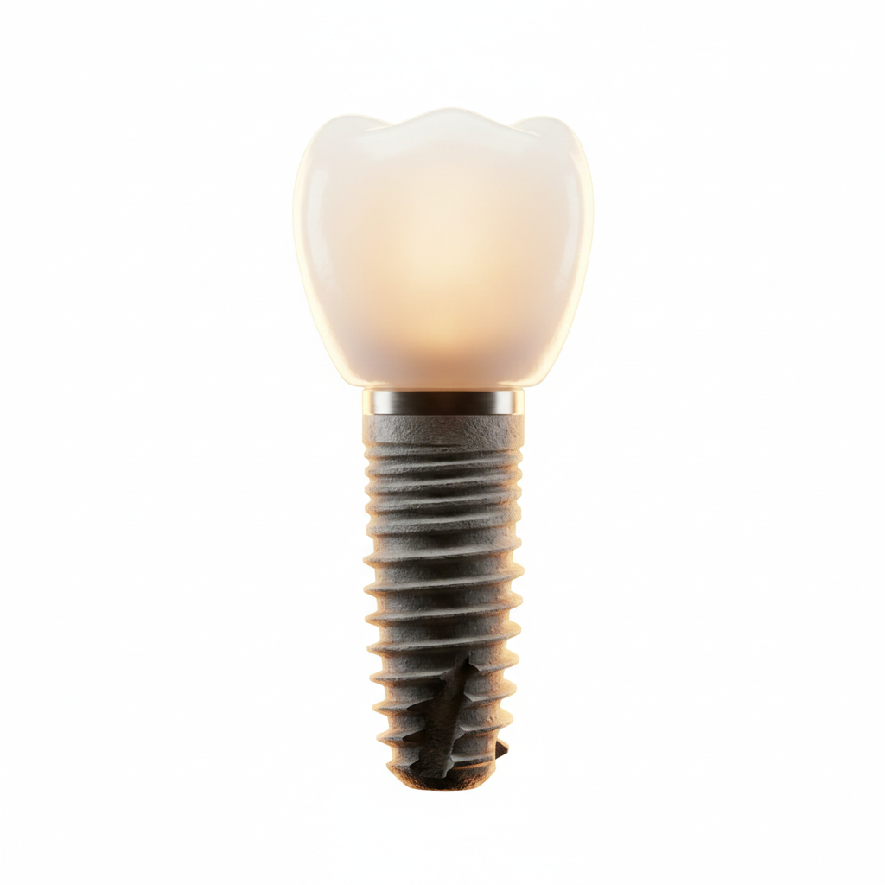

Excelência
em Estruturas
de Titânio
Conheça nosso processo de exoesqueletos fundidos, usinados e prototipados em impressora 3D.
Responsável
Ricardo Von Marchendorf Coutinho
37 Anos de Experiência (IME)
Desde a concepção até a prototipagem completa,
um sistema inovador
em titânio
customizado.

Produtos

Customizados
Estrutura sob medida


Localização
Rio de Janeiro
Teresópolis